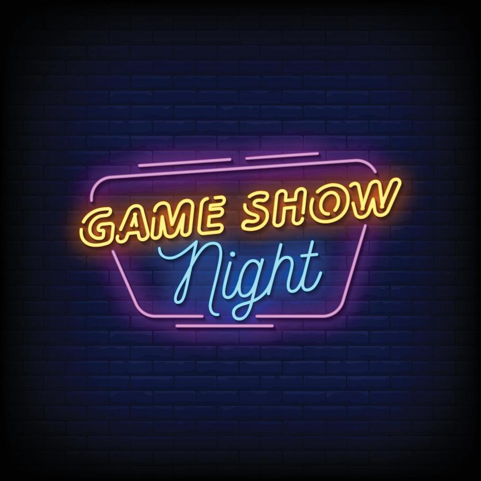
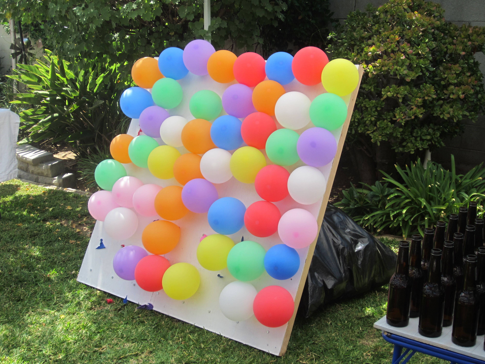
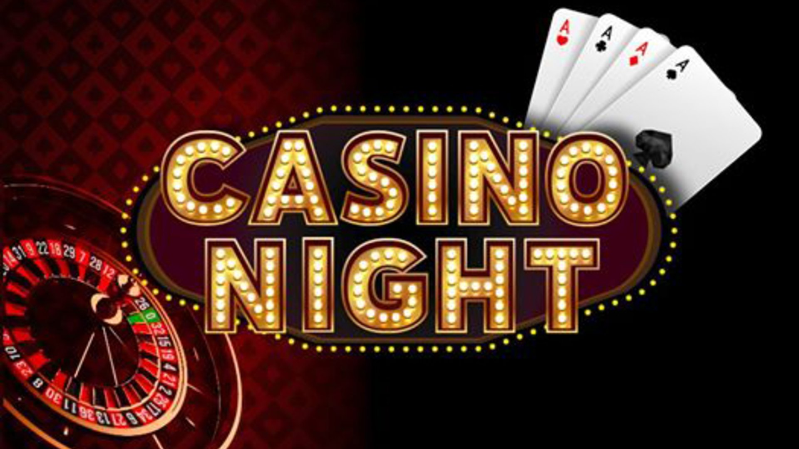

Game Night Themes
Game Show Night
Family Fued, Jeopardy, Minute to Win it...
Everyone loves a good theme. Whether you're hosting a party or creating a fun day for the household, having a can theme can take it to the next level. Setting a theme could also help spark ideas for which games you would like play and snacks to provide. So if you're feeling a little inspired or need a reason to try some of those DIY projects here's your chance. Here are a few ideas to get you started.
- Games: Create your own versions of Jeopardy!, Family Feud, Wheel of Fortune, or Minute to Win It.
- Food: Have finger foods like mini sliders, chips, and dip. You can also serve “show-stopping” cocktails or mocktails.
- Decor: Set up a stage-like area with bright lights and buzzers, and even have someone be the host.
Outdoor Game Night
Balloon Pop, Kickball, Badmintion...
- Games: Lawn games like cornhole, giant Jenga, badminton, or ring toss, plus card games or board games to play on picnic tables.
- Food: BBQ or picnic-style fare like hot dogs, burgers, chips, and a cooler stocked with drinks.
- Decor: Think picnic blankets, string lights, and a laid-back atmosphere for a casual vibe.
Casino/Card Night
Card Games, Poker, Spades...
- Games: Set up a few tables for games like poker, blackjack, or roulette. If you don't want to gamble with real money, use play money or chips.
- Food: Have small, elegant hors d'oeuvres, or go for an old-school Vegas vibe with cocktails and snacks.
- Decor: Think glitzy Vegas—bright lights, maybe even a DIY "red carpet" entrance!